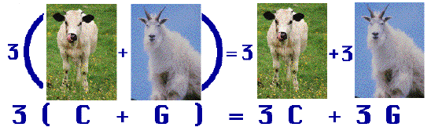
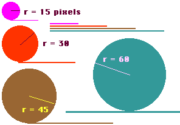
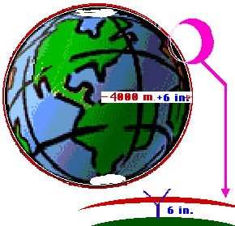

Note that you can add once and then multiply once or you can multiply twice and then add once. Example 2 :  Example 3 : Suppose a Bulloch county farming family wanted to triple their stock. They presently have 4 goats and 5 cows. How many will they have after tripling their stock? 3 ( 4G + 5C ) = 3(4G) + 3(5C) = (3.4)G + (3.5) = 12G + 15C | |
| Girl, boy, nor machine can multiply 3 numbers at the same time. Thus we need the associative law to tell us that it doesn't matter which two we choose first. What other law may we need to prove this? | |
|  | |
| Find the length of the rope needed to lasso the world. Remember that Circumference = P * Diameter Calculate the volume of the world. | |
|  | If you went clear around the world, raising the rope 6 inches off the surface of the world, how much additional rope would you need? |